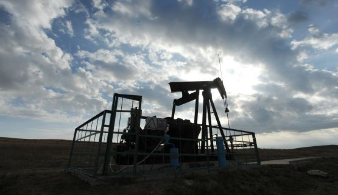

Michał Odrzywołek 41K9
Gaz ziemny zwany również błękitnym paliwem – rodzaj paliwa kopalnego pochodzenia organicznego, gaz zbierający się w skorupie ziemskiej w pokładach wypełniających przestrzenie, niekiedy pod wysokim ciśnieniem. Pokłady gazu ziemnego występują samodzielnie lub towarzyszą złożom ropy naftowej lub węgla kamiennego.
